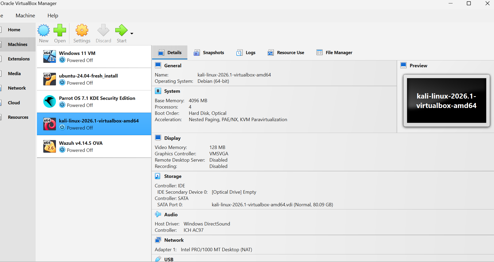
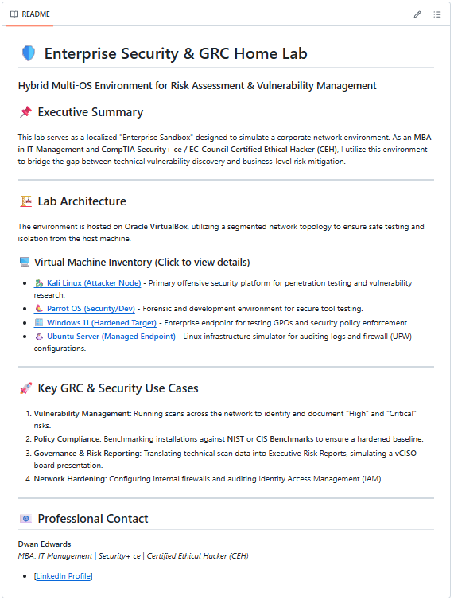
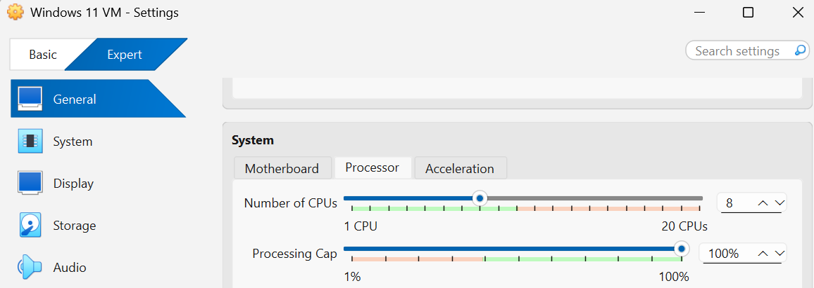
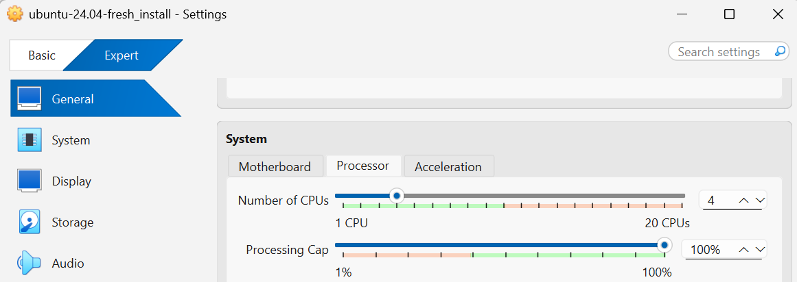
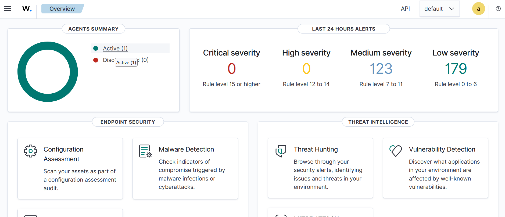

Kickstarting My Cybersecurity Journey: Taking the Leap of Faith
Published: May 13, 2026
🚀 Phase 1: The "Why" Behind the Sandbox
For months, I read complex cybersecurity frameworks. I found myself spacing out over the endless walls of theory. I had a strong ambition to kickstart my new journey into cybersecurity. I just needed to take a leap of faith and move from documentation to practical building.
To truly understand enterprise GRC risk models, I had to see the actual threats in action.
My goal was to build a simple, completely isolated environment. I wanted to safely test deployment configurations and offensive security tools like Kali Linux. I needed to ensure this setup would not impact my home network.
I expected this project to take about one hour.
Instead, it turned into a multi-hour journey. I had to troubleshoot drivers, adjust BIOS settings, and balance system resources. This initial build taught me a major lesson. Building a lab requires a lot of patience with yourself.
Taking that leap of faith was incredibly rewarding. Seeing the final, working outcome was completely surreal. I always knew I could do it, but seeing it run proved it. Here is exactly how I stood up my sandbox, the hurdles I encountered, and the resources that helped me succeed.
🛠️ Phase 2: The Core Lab Setup
Building a hacking lab isn't just about clicking "Install." It is about architecting a safe, stable environment. I wanted to simulate a corporate network environment to bridge the gap between technical vulnerability discovery and business-level risk mitigation.
Here is the blueprint I used for my build:
- The Foundation: I chose Oracle VirtualBox as my hypervisor. It serves as the foundation for my segmented network topology.
- Host Machine Resources: I allocated 4 Processors to my virtual environment. This specific step balances my host machine's performance needs with the laboratory's stability.
- Network Isolation: I configured an isolated network environment. This keeps the lab safely separated from my home network and prevents vulnerable target machines from being exposed to the public internet.

🖥️ My Virtual Machine Inventory
Instead of just installing pre-made vulnerability testing boxes, I set up a true enterprise-focused lineup:
- The Attacker Node: Kali Linux — My primary offensive security platform for penetration testing and vulnerability research.
- The Security/Dev Node: Parrot OS — A dedicated forensic and development environment for secure tool testing.
- The Hardened Target: Windows 11 — An enterprise endpoint used for testing Group Policy Objects (GPOs) and security policy enforcement.
- The Managed Endpoint: Ubuntu Server — A Linux infrastructure simulator for auditing logs and firewall (UFW) configurations.

📚 A Quick Shout-out: The Guide That Saved My Sanity
Before diving deeper into the configuration, I want to give a massive thank you to author James Bernstein. His book, VirtualBox Made Easy, provided the perfect foundational roadmap for this entire build.
As a beginner, virtualization concepts can feel incredibly overwhelming. His straightforward, easy-to-read style gave me the confidence to stand up this environment without the fear of breaking my host machine. If you are starting your journey, his book is an essential tool for practicing patience with yourself during the build phase.
🛡️ Phase 3: What I Conquered (The Technical Hurdles)
This is where my patience was truly put to the test. The real challenge wasn't just booting up the operating systems. The real battle was mastering Network Segmentation and Hardware Configuration.
I had to handle environment-related configuration conflicts to get these specific nodes communicating correctly. Ensuring that the Windows 11 Hardened Target and the Ubuntu Server could securely interact with my Kali Linux Attacker Node—all while completely cut off from the live internet—required rigorous troubleshooting.
I had to double-check BIOS virtualization settings, fix mismatched virtual network adapters, and carefully monitor system resources. Conquering these complex enterprise-level connectivity hurdles on my own is what made the final success so rewarding.
The ultimate verification of my network segmentation and setup wasn't just a basic connectivity ping. The true surreal moment was opening up my browser and looking at my live telemetry pipeline.


Below is my active Wazuh SIEM dashboard, showing that my endpoints are fully checked-in, monitored, and logging security events:

Figure 1: My active Wazuh dashboard showing 1 live agent actively reporting endpoint security configuration and vulnerability telemetry.Seeing this data flow in successfully was incredibly rewarding. It proved that my isolated network architecture wasn't just functional, but securely monitored—bridging the exact gap between offensive security testing and defensive enterprise auditing.
🔍 Analyzing the Noise: Breaking Down the 123 Medium Severity Alerts
When you first spin up an enterprise security tool like Wazuh, seeing over one hundred alerts pop up can be startling. However, this is exactly where data analysis replaces fear of the unknown.
In the Wazuh ecosystem, alerts are classified by severity scores ranging from 0 to 15. As displayed on my live dashboard, the 123 Medium Severity alerts sit directly within Rule Levels 7 to 11. These are defined as significant, non-critical system events or low-relevance security anomalies that warrant analysis but do not represent an immediate compromise.
Here is the technical breakdown of what generated those 123 alerts across my virtual environment, and how they map to enterprise risk profiles:
1. File Integrity Monitoring (FIM) Flags (Rule Levels 7 - 8)
A large portion of the alerts stemmed from baseline system drift. When I initially booted my fresh Windows 11 and Ubuntu Server targets, background operating system updates and system account creations immediately triggered file modification rules.
- The Cause: Changes detected inside protected system directories (such as C:\Windows\System32 or /etc/).
- GRC Perspective: In a corporate setting, undocumented file alterations indicate a breakdown in Change Management Policies. Wazuh flags these to ensure only authorized patches are running on production nodes.
2. Routine System Authentication Failures (Rule Level 9)
Whenever a user mistypes a password, or a service account attempts an automated connection with an outdated token, an alert is captured.
- The Cause: Individual failed authentication attempts on the Ubuntu Server (SSH) and the Windows 11 target (Event ID 4625).
- GRC Perspective: While an isolated bad login is normal human error, a high volume of these events directly feeds into an organization's Identity and Access Management (IAM) assessment. Monitoring these baselines helps security teams distinguish a forgetful employee from a malicious brute-force attack.
3. Low-Privilege Application Execution (Rule Level 10)
My offensive testing using Kali Linux caused the target operating systems to generate auditing records as unusual administrative processes were queried.
- The Cause: Detection of network reconnaissance commands or standard users invoking commands like sudo to inspect configuration restrictions.
- GRC Perspective: This triggers audit trails relevant to the Principle of Least Privilege. Tracking which entities run elevation scripts allows compliance officers to verify that users are not exceeding their strictly assigned business functions.
🛡️ The Takeaway: SIEM Tuning as a Risk Strategy
Seeing 123 alerts taught me that a cybersecurity engineer's job is to clear out the noise. Building this out highlighted how crucial baseline optimization is. In a future post, I will discuss SIEM tuning—the process of creating custom rules to suppress predictable background events so that true critical alerts stand out clearly when an incident occurs.
🏁 Conclusion: The True Value of the Journey
Taking a leap of faith to build my very first virtual lab was one of the most rewarding decisions I have made. Moving away from reading passive theory to configuring an active, isolated network architecture felt surreal. I always knew I had the drive to complete this project, but seeing the virtual machines communicate and reporting live telemetry on my Wazuh dashboard proved it.
This entire experience taught me that the technical skills are only half the battle. The most critical asset you can bring to a home lab build is an immense amount of patience with yourself. Hurdles like managing hardware allocations, debugging BIOS settings, and checking virtual network adapters take time to resolve. Expecting things to work perfectly in an hour is unrealistic; embracing the troubleshooting process is where the real engineering confidence is built.
🔮 What Comes Next?
This laboratory infrastructure is just the foundational sandbox for my ongoing journey into cybersecurity and risk visibility. Now that I have successfully established basic connectivity and centralized telemetry collection through my Wazuh manager, my immediate roadmap includes:
- Log Forwarding & Data Ingestion: Configuring a log forwarder (such as a Splunk Universal Forwarder or Fluentbit) to pipe these exact Wazuh JSON alert logs directly into my active Splunk security dashboards.
- Correlating SIEM Telemetry with GRC Metrics: Refining my existing Splunk dashboard panels to map technical endpoint alerts—like failed logins and configuration drifts—straight onto the strategic enterprise risk visualization models hosted on this site.
- Automated Threat Hunting Baselines: Building persistent search queries inside my Splunk deployment to baseline normal network traffic between my Windows 11 client and Ubuntu server, allowing me to spot real-time defensive deviations instantly.
Building a lab can feel intimidating when you are standing at the starting line, looking at the unknown. If you are just starting your journey, grab a copy of James Bernstein's VirtualBox Made Easy, give yourself permission to make mistakes, and practice patience as you learn by doing.